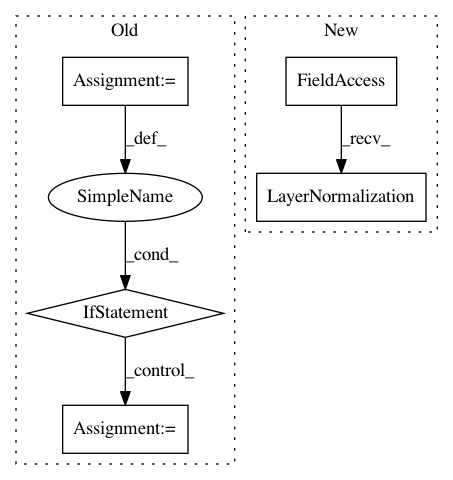

78a7f7de24c34235d0784a5781f46de34d2336eb,python/eight_mile/tf/layers.py,TransformerDecoder,__init__,#TransformerDecoder#Any#Any#Any#Any#Any#Any#Any#,1084
Before Change
def __init__(self, d_model, num_heads, pdrop, scale=True, activation="relu", d_ff=None, name=None):
super(TransformerEncoder, self).__init__(name=name)
if d_ff is None:
d_ff = 4 * d_model
self.self_attn = MultiHeadedAttention(num_heads, d_model, pdrop, scale)
self.src_attn = MultiHeadedAttention(num_heads, d_model, pdrop, scale)
self.dropout = tf.keras.layers.Dropout(pdrop)
self.ln1 = LayerNorm(name="ln_1")
After Change
self.ffn = FFN(d_model, pdrop, activation_type, d_ff, name="ffn")
self.ln1 = tf.keras.layers.LayerNormalization(epsilon=1e-6)
self.ln2 = tf.keras.layers.LayerNormalization(epsilon=1e-6)
self.ln3 = tf.keras.layers.LayerNormalization(epsilon=1e-6)
self.dropout = tf.keras.layers.Dropout(pdrop)
def call(self, inputs):
memory, x, src_mask, tgt_mask = inputs
In pattern: SUPERPATTERN
Frequency: 3
Non-data size: 5
Instances
Project Name: dpressel/mead-baseline
Commit Name: 78a7f7de24c34235d0784a5781f46de34d2336eb
Time: 2019-10-29
Author: dpressel@gmail.com
File Name: python/eight_mile/tf/layers.py
Class Name: TransformerDecoder
Method Name: __init__
Project Name: dpressel/mead-baseline
Commit Name: b97fe6310224efd2e7449e53d067f9e3adc178a5
Time: 2020-07-21
Author: wliu@interactions.com
File Name: api-examples/transformer_utils.py
Class Name: PairedModel
Method Name: __init__
Project Name: dpressel/mead-baseline
Commit Name: 78a7f7de24c34235d0784a5781f46de34d2336eb
Time: 2019-10-29
Author: dpressel@gmail.com
File Name: python/eight_mile/tf/layers.py
Class Name: TransformerEncoder
Method Name: __init__